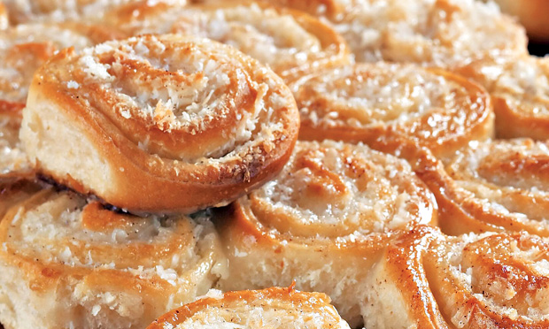

Tema I
Doces caseiros
Biscoitos Caseiros
"John Sabores"
Ingredientes:
- 1 lata de leite condensado
- 3 colheres de manteiga
- 5 chávenas de farinha.
Como fazer:
- Ligar o lume, pegar em uma tigela normal e colocar os ingredientes todos. Misturar tudo muito bem até obter uma massa homogénea.
- Com o rolo de massa, esticar muito bem a massa e dar o formato aos seus gosto.
- Em uma traveça já ontada, com farinha de trigo, levar os biscoitos ao forno durante 15 minutos.
- Depois de sair do forno, decorar aos seus gostos e coma bem que vais amar.
Bola de Berlim
"John Sabores"
Ingredientes:
- 300ml de leite
- 3 colheres de fermento biológico
- 2 ovos
- 100g de açúcar
- 900g de trigo
- 3 colheres de manteiga
- 100g de côco ralado
- 200g de chocolate derretido
Como fazer:
- Pegar em uma tigela normal, colocar o leite, o fermento e misturar. Em seguida acrescentar os ovos e o leite, misturar muito bem durante 30 segundos.
- Adicionar a farinha de trigo aos poucos e misturar muito bem, deixar a massa descansar durante 20 minutos.
- Depois da massa descansar, sovar a massa com a manteiga durante 5 minutos, depois cortar a massa em várias bolinhas e frite-as.
- Depois de fritas, cortar ao meio e colocar o recheio que quiseres, depois disso porvilhar com côco e coma bem que vais Amar.
Donuts Fofinhos
"John Sabores"
Ingredientes:
- 300ml de leite
- 3 colheres de fermento biológico
- 2 ovos
- 100g de açúcar
- 900g de trigo
- 3 Colheres de manteiga
- Chocolate já derretido
- Pirpitas coloridas
- Pérolas doces
Como fazer:
- Pegar em uma tigela normal, colocar o leite, o fermento e misturar. Em seguida acrescentar os ovos, o leite e misturar muito bem durante 30 segundos.
- Adicionar a farinha de trigo aos poucos, misturar muito bem e deixar a massa descansar durante 20 minutos.
- Depois da massa descansar, sovar a massa com a manteiga durante 5 minutos, depois cortar a massa em várias bolinhas, apalpar, fazer um furo ao meio e deixa descansar. E frite-as.
- Depois de fritas, passar ao chocolate, porvilhar com pirpitas, asseguir deixe-a no frigorífico e depois coma bem que vais Amar.

Pães Doces Caseiros
"John Sabores"
Ingredientes:
- 300ml de leite
- 3 colheres de fermento biológico
- 2 ovos
- 100g de açúcar
- 900g de trigo
- 3 colheres de manteiga
- 400g de açúcar
- 300g côco ralado
Como fazer:
- Ligar o forno, pegar em uma tigela normal, colocar o leite, o fermento e misturar. Em seguida acrescentar os ovos, o leite e misturar muito bem durante 30 segundos.
- Adicionar a farinha de trigo aos poucos, misturar muito bem e deixar a massa descansar durante 20 minutos.
- Enquanto descansa, pegar uma tigela, fazer o recheio de açúcar, manteiga e côco.
- Depois da massa descansar, sovar a massa com a manteiga durante 5 minutos. Depois esticar a massa, colocar o recheio, enrolar e cortar. Levar ao forno em um tabuleiro já ontado durante 45 minutos.
- Depois de sair coma bem que vais Amar.

Tarte de Chocolate
"John Sabores"
Ingredientes:
- 200ml de leite
- 1 colher de fermento biológico
- 2 ovos
- 100g de açúcar
- 500g de trigo
- 3 colheres de manteiga
- 500g chocolate derretido
Como fazer:
- Pegar em uma tigela normal, colocar o leite, o fermento e misturar. Em seguida acrescentar os ovos, o leite e misturar muito bem durante 30 segundos.
- Adicionar a farinha de trigo aos poucos, misturar muito bem e deixar a massa descansar durante 20 minutos.
- Depois da massa descansar, sovar a massa com a manteiga durante 5 minutos, depois esticar a massa, colocar em uma forma de tarte e levar ao forno durante 5 minutos.
- Depois de sair do forno, colocar o recheio de chocolate, levar ao freezer durante 10 minutos. Depois de sair do freezer coma bem que vais Amar.